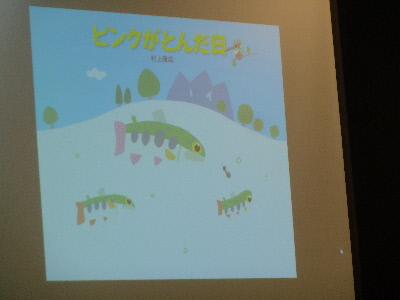
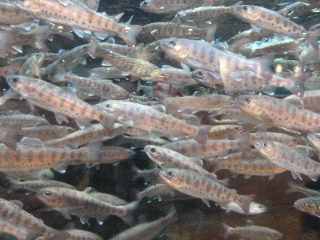
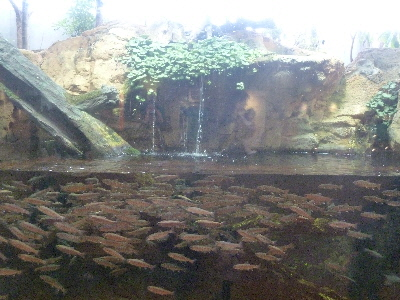
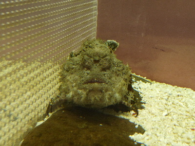
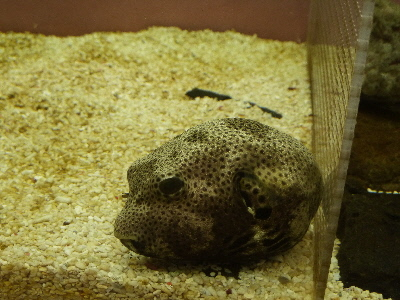
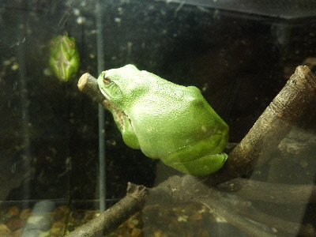
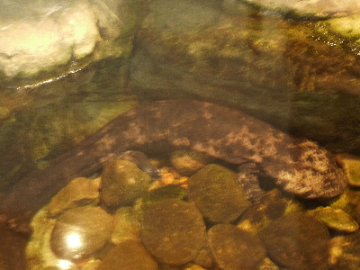
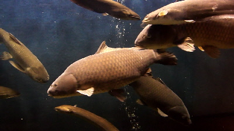
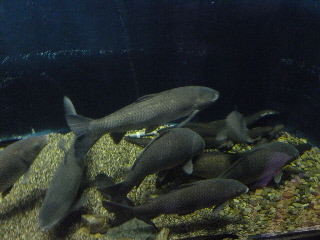

久しぶりにゴビウスに行きました。
2017/02/25
今日は絵本作家の村上康成さんが来館してました。

いいお話が聞けて良かったです。
忘れないようにしたいと思いました。

ゴビウスの中もしっかり見て回りました。

この水槽カッコイイです。
コンパクトなアクアテラリウム見ますが、これだけ大きいのはなかなかないですよね。
迫力がありました。

2月なので、節分にちなんだ展示がありました。

オニオコゼ（鬼）と模様フグ（福）です。
季節感のある展示っていいですね。

モリアオガエルです。
タマゴは見ますが、カエル自体を見たのは初めてかも。
綺麗なミドリですね。

オオサンショウオはあまり動かないですね。
これでホントに魚が食べれるのかなと、いつも思います。

一番印象に残るのは、宍道湖にいる巨大魚達ですね。
こんなんがすぐそこの湖にいるんだなー。
ゴビウス無料開放！感謝デー。
2011/03/11
毎年3月には会館記念で無料開放の日があるようですが、今年は10周年記念でちょっと派手みたいでした。
お客さんが多く、ゴビウスの駐車場が満車で湖遊館横のグランドも満車になっていました。
ゴビウスに入館するのに、長い列にならんで順番待ちをしましたし、ゴビウスを見た後は「おたのしみ大抽選会」をするためにまた長い時間並びました。
抽選ではボールペンを貰いました。
待ち時間が長く退屈でしたが、入館無料だし、ボールペンもらったし、天気も良かったので、そこそこ楽しかったかなって思いました。

大きいコイは見ごたえがありました。
ゴビウス春まつりで無料開放。
2009/03/13
3/29（日）は宍道湖自然館ゴビウスでは、「春まつり」があるようです。
ゴビウスが無料開放（要整理券）入管整理券は当日会場で配布らしいです。
紅白餅まき等のイベントや、お店屋さんや体験ブースがあるので、お子さん連れで行くといいかもしれません。